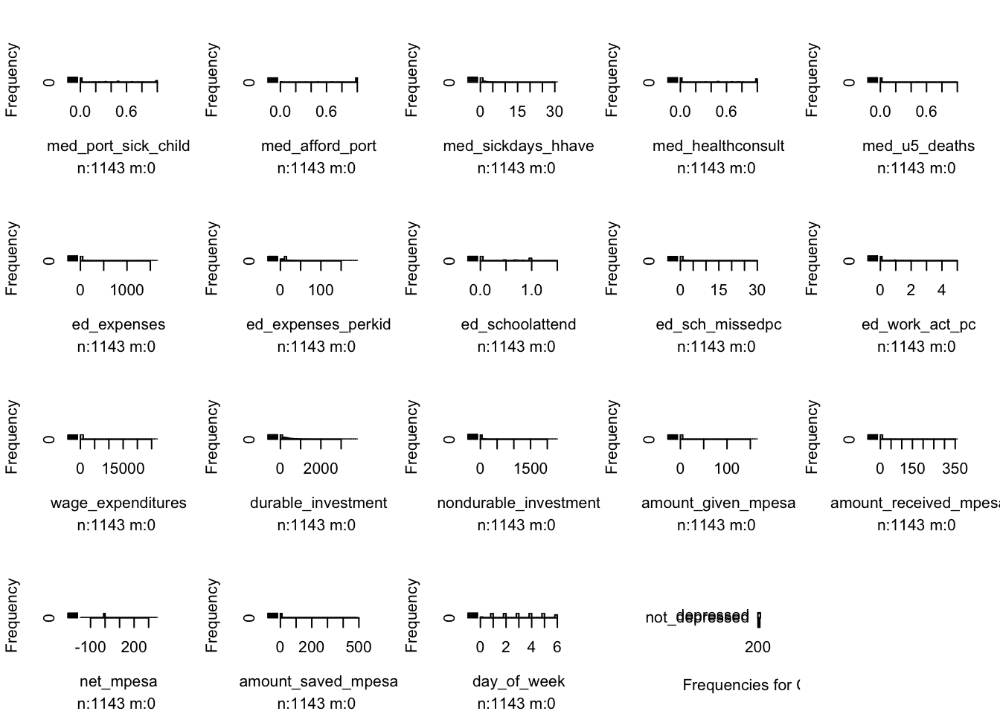

BST260 Final Project
library(tidyverse)
library(dplyr)
library(dslabs)
library(ggplot2)
library(lubridate)
library(caret)
library(HistData)
library(Lahman)
library(purrr)
library(pdftools)
library(broom)
library(stringr)
library(tidyr)
library(readr)Exploratory Data Analysis
dat <- read_csv('./data/train.csv')
var_explain <- read_csv('./data/var_explain.csv')
var_explain## # A tibble: 75 × 2
## name detail
## <chr> <chr>
## 1 surveyid Individual Identifier
## 2 village Village Identifier
## 3 survey_date Date of Interview (days since Jan1 of first year)
## 4 femaleres Female respondent
## 5 age Age (respondent)
## 6 married Marital status (respondent)
## 7 children Number of children
## 8 hhsize Household size
## 9 edu Years of education completed (respondent)
## 10 hh_children Number of children <=18 or younger in Household
## # … with 65 more rowsglimpse(dat)## Rows: 1,143
## Columns: 75
## $ surveyid <dbl> 926, 747, 1190, 1065, 806, 483, 849, 1386, 930…
## $ village <dbl> 91, 57, 115, 97, 42, 25, 130, 72, 195, 33, 52,…
## $ survey_date <chr> "23-Nov-61", "24-Oct-61", "05-Oct-61", "23-Sep…
## $ femaleres <dbl> 1, 1, 1, 1, 0, 1, 0, 1, 1, 1, 1, 1, 1, 1, 1, 1…
## $ age <dbl> 28.0, 23.0, 22.0, 27.0, 59.0, 35.0, 34.0, 21.0…
## $ married <dbl> 1, 1, 1, 1, 0, 1, 0, 1, 1, 1, 0, 0, 1, 1, 1, 1…
## $ children <dbl> 4, 3, 3, 2, 4, 6, 1, 2, 7, 4, 0, 2, 4, 4, 0, 2…
## $ hhsize <dbl> 6, 5, 5, 4, 6, 8, 3, 4, 9, 6, 1, 3, 6, 6, 2, 5…
## $ edu <dbl> 10, 8, 9, 10, 10, 10, 9, 10, 9, 10, 1, 9, 10, …
## $ hh_children <dbl> 0, 0, 0, 2, 4, 6, 1, 2, 7, 0, 0, 2, 4, 4, 0, 2…
## $ hh_totalmembers <dbl> NA, NA, NA, 4, 6, 8, 3, 4, 9, NA, NA, 3, 6, 6,…
## $ cons_nondurable <dbl> 0.00000, 0.00000, 0.00000, 378.83292, 258.6718…
## $ asset_livestock <dbl> 0.000000, 0.000000, 0.000000, 526.671080, 8.26…
## $ asset_durable <dbl> 0.00000, 0.00000, 0.00000, 196.98904, 173.5265…
## $ asset_phone <dbl> 0.00000, 0.00000, 0.00000, 24.02305, 19.21844,…
## $ asset_savings <dbl> 0.000000, 0.000000, 0.000000, 49.647648, 0.000…
## $ asset_land_owned_total <dbl> 0.00, 0.00, 0.00, 0.00, 0.50, 1.70, 1.00, 0.00…
## $ asset_niceroof <dbl> 0, 0, 0, 0, 0, 0, 0, 0, 0, 0, 0, 0, 0, 0, 0, 0…
## $ cons_allfood <dbl> 0.00000, 0.00000, 0.00000, 289.17352, 173.0109…
## $ cons_ownfood <dbl> 0.0000000, 0.0000000, 0.0000000, 36.4349670, 0…
## $ cons_alcohol <dbl> 0, 0, 0, 0, 0, NA, 0, 0, 0, 0, 0, 0, 0, 0, 0, …
## $ cons_tobacco <dbl> 0.000000, 0.000000, 0.000000, 0.000000, 0.0000…
## $ cons_med_total <dbl> 0.0000000, 0.0000000, 0.0000000, 4.1639962, 0.…
## $ cons_med_children <dbl> NA, NA, NA, 0.9609222, 0.8007685, 0.0000000, 0…
## $ cons_ed <dbl> 0.0000000, 0.0000000, 0.0000000, 1.6816138, 2.…
## $ cons_social <dbl> 0.00000000, 0.00000000, 0.00000000, 39.7715000…
## $ cons_other <dbl> 0.000000, 0.000000, 0.000000, 44.042267, 74.50…
## $ ent_wagelabor <dbl> 0, 0, 0, 0, 1, 0, 0, 0, 1, 0, 0, 0, 0, 0, 0, 0…
## $ ent_ownfarm <dbl> 0, 0, 0, 1, 0, 1, 0, 0, 0, 0, 0, 0, 0, 1, 1, 1…
## $ ent_business <dbl> 0, 0, 0, 0, 0, 0, 0, 1, 0, 0, 0, 0, 0, 0, 0, 0…
## $ ent_nonagbusiness <dbl> 0, 0, 0, 1, 0, 1, 0, 0, 0, 0, 0, 0, 0, 0, 0, 0…
## $ ent_employees <dbl> 0, 0, 0, 0, 0, 0, 0, 0, 0, 0, 0, 0, 0, 0, 0, 0…
## $ ent_nonag_revenue <dbl> 0.000000, 0.000000, 0.000000, 32.030739, 0.000…
## $ ent_nonag_flowcost <dbl> 0.000000, 0.000000, 0.000000, 0.000000, 0.0000…
## $ ent_farmrevenue <dbl> 0.0000000, 0.0000000, 0.0000000, 22.2880550, 0…
## $ ent_farmexpenses <dbl> 0.00000000, 0.00000000, 0.00000000, 1.87513290…
## $ ent_animalstockrev <dbl> 0.000000, 0.000000, 0.000000, 16.282293, 0.000…
## $ ent_total_cost <dbl> 0.00000000, 0.00000000, 0.00000000, 17.8905030…
## $ fs_adskipm_often <dbl> 0.0, 0.0, 0.0, 0.0, 0.0, 7.5, 20.0, 0.0, 3.0, …
## $ fs_adwholed_often <dbl> 0.0, 0.0, 0.0, 0.0, 0.0, 3.0, 3.0, 0.0, 0.0, 0…
## $ fs_chskipm_often <dbl> NA, NA, NA, 0.0, 0.0, 7.5, 20.0, 0.0, 3.0, NA,…
## $ fs_chwholed_often <dbl> NA, NA, NA, 0, 0, 0, 0, 0, 0, NA, NA, 0, 0, 0,…
## $ fs_meat <dbl> NA, NA, NA, 3, 2, 1, 1, 4, 4, NA, NA, 3, 4, 4,…
## $ fs_enoughtom <dbl> NA, NA, NA, 1, 0, 1, 0, 1, 1, NA, NA, 0, 0, 1,…
## $ fs_sleephun <dbl> NA, NA, NA, 1, 0, 1, 1, 0, 0, NA, NA, 0, 1, 0,…
## $ med_expenses_hh_ep <dbl> NA, NA, NA, NA, NA, 1.60153700, 0.05338457, 0.…
## $ med_expenses_sp_ep <dbl> NA, NA, NA, NA, NA, NA, NA, NA, NA, NA, NA, NA…
## $ med_expenses_child_ep <dbl> NA, NA, NA, NA, 1.2331835, NA, 0.1601537, 0.80…
## $ med_portion_sickinjured <dbl> NA, NA, NA, 0.0000000, 0.3333333, 0.1250000, 1…
## $ med_port_sick_child <dbl> NA, NA, NA, 0.0000000, 0.2500000, 0.0000000, 1…
## $ med_afford_port <dbl> NA, NA, NA, NA, 0.5000000, 1.0000000, 0.333333…
## $ med_sickdays_hhave <dbl> NA, NA, NA, 0.0000000, 1.1666666, 0.8750000, 0…
## $ med_healthconsult <dbl> NA, NA, NA, NA, 1.0000000, 0.0000000, 0.000000…
## $ med_vacc_newborns <dbl> 1, 1, 1, 1, 1, 1, 1, 1, 1, 1, 1, 1, 1, 1, 1, 1…
## $ med_child_check <dbl> 1, 1, 1, 1, 1, 1, 1, 1, 1, 1, 1, 1, 1, 1, 1, 1…
## $ med_u5_deaths <dbl> NA, NA, NA, NA, NA, NA, NA, NA, NA, NA, NA, NA…
## $ ed_expenses <dbl> NA, NA, NA, 20.179367, 27.226130, 32.030739, 6…
## $ ed_expenses_perkid <dbl> NA, NA, NA, 10.089684, 6.806532, 6.406148, 6.4…
## $ ed_schoolattend <dbl> NA, NA, NA, 0.5000000, 0.7500000, 0.8000000, 1…
## $ ed_sch_missedpc <dbl> NA, NA, NA, 1.5000000, 1.7500000, 0.0000000, 0…
## $ ed_work_act_pc <dbl> NA, NA, NA, 0.0000000, 1.2500000, 1.5000000, 1…
## $ labor_primary <dbl> 0, 0, 0, 0, 1, 0, 0, 0, 1, 0, 0, 1, 0, 0, 0, 0…
## $ wage_expenditures <dbl> 0, 0, 0, 0, 0, 0, 0, 0, 0, 0, 0, 0, 0, 0, 0, 0…
## $ durable_investment <dbl> 0.0000, 0.0000, 0.0000, 778.1123, 201.0056, 44…
## $ nondurable_investment <dbl> 0.0000000, 0.0000000, 0.0000000, 69.2197650, 4…
## $ given_mpesa <dbl> 0, 0, 0, 0, 0, 0, 0, 0, 0, 0, 0, 0, 0, 0, 0, 0…
## $ amount_given_mpesa <dbl> 0, 0, 0, 0, 0, 0, 0, 0, 0, 0, 0, 0, 0, 0, 0, 0…
## $ received_mpesa <dbl> 0, 1, 0, 0, 0, 0, 0, 0, 0, 0, 0, 0, 0, 0, 0, 0…
## $ amount_received_mpesa <dbl> 0.000000, 4.804611, 8.007685, 0.000000, 0.0000…
## $ net_mpesa <dbl> 0.000000, 4.804611, 8.007685, 0.000000, 0.0000…
## $ saved_mpesa <dbl> 1, 0, 1, 1, 0, 0, 0, 0, 0, 0, 0, 0, 0, 1, 0, 0…
## $ amount_saved_mpesa <dbl> 0.000000, 0.000000, 0.000000, 1.249199, 0.0000…
## $ early_survey <dbl> 0, 0, 0, 0, 0, 0, 0, 0, 0, 0, 0, 1, 0, 0, 1, 0…
## $ depressed <dbl> 0, 1, 0, 0, 0, 0, 1, 0, 0, 0, 1, 0, 0, 0, 1, 0…
## $ day_of_week <dbl> 5, 3, 5, 0, 3, 6, 3, 1, 1, 3, 5, 5, 6, 2, 4, 4…summary(dat)## surveyid village survey_date femaleres
## Min. : 1.0 Min. : 1.00 Length:1143 Min. :0.0000
## 1st Qu.: 351.5 1st Qu.: 23.00 Class :character 1st Qu.:1.0000
## Median : 717.0 Median : 57.00 Mode :character Median :1.0000
## Mean : 715.9 Mean : 76.41 Mean :0.9169
## 3rd Qu.:1078.5 3rd Qu.:105.50 3rd Qu.:1.0000
## Max. :1429.0 Max. :292.00 Max. :1.0000
##
## age married children hhsize
## Min. :17.00 Min. :0.0000 Min. : 0.00 Min. : 1.00
## 1st Qu.:24.00 1st Qu.:1.0000 1st Qu.: 2.00 1st Qu.: 3.00
## Median :30.00 Median :1.0000 Median : 3.00 Median : 5.00
## Mean :34.54 Mean :0.7725 Mean : 2.86 Mean : 4.87
## 3rd Qu.:41.00 3rd Qu.:1.0000 3rd Qu.: 4.00 3rd Qu.: 6.00
## Max. :91.00 Max. :1.0000 Max. :10.00 Max. :12.00
##
## edu hh_children hh_totalmembers cons_nondurable
## Min. : 1.000 Min. : 0.000 Min. : 1.000 Min. : 0.0
## 1st Qu.: 8.000 1st Qu.: 0.000 1st Qu.: 3.000 1st Qu.: 0.0
## Median : 9.000 Median : 2.000 Median : 5.000 Median : 107.4
## Mean : 8.736 Mean : 2.018 Mean : 4.906 Mean : 128.4
## 3rd Qu.:10.000 3rd Qu.: 3.000 3rd Qu.: 6.000 3rd Qu.: 188.5
## Max. :19.000 Max. :10.000 Max. :12.000 Max. :1431.6
## NA's :334
## asset_livestock asset_durable asset_phone asset_savings
## Min. : 0.00 Min. : 0.0 Min. : 0.00 Min. : 0.00
## 1st Qu.: 0.00 1st Qu.: 0.0 1st Qu.: 0.00 1st Qu.: 0.00
## Median : 16.52 Median : 121.7 Median : 0.00 Median : 0.00
## Mean : 113.70 Mean : 148.6 Mean : 19.66 Mean : 10.25
## 3rd Qu.: 102.57 3rd Qu.: 221.9 3rd Qu.: 32.03 3rd Qu.: 0.00
## Max. :2754.53 Max. :3720.4 Max. :192.18 Max. :2242.15
##
## asset_land_owned_total asset_niceroof cons_allfood cons_ownfood
## Min. : 0.0000 Min. :0.0000000 Min. : 0.00 Min. : 0.000
## 1st Qu.: 0.0000 1st Qu.:0.0000000 1st Qu.: 0.00 1st Qu.: 0.000
## Median : 0.0000 Median :0.0000000 Median : 77.11 Median : 3.203
## Mean : 0.9269 Mean :0.0008749 Mean : 95.81 Mean : 8.324
## 3rd Qu.: 1.5000 3rd Qu.:0.0000000 3rd Qu.: 136.84 3rd Qu.: 9.823
## Max. :27.0000 Max. :1.0000000 Max. :1386.97 Max. :181.574
##
## cons_alcohol cons_tobacco cons_med_total cons_med_children
## Min. : 0.000 Min. : 0.0000 Min. : 0.00 Min. : 0.00
## 1st Qu.: 0.000 1st Qu.: 0.0000 1st Qu.: 0.00 1st Qu.: 0.00
## Median : 0.000 Median : 0.0000 Median : 0.00 Median : 0.00
## Mean : 1.178 Mean : 0.6348 Mean : 2.69 Mean : 1.83
## 3rd Qu.: 0.000 3rd Qu.: 0.0000 3rd Qu.: 0.00 3rd Qu.: 0.00
## Max. :104.672 Max. :41.8687 Max. :206.60 Max. :206.60
## NA's :43 NA's :20 NA's :419
## cons_ed cons_social cons_other ent_wagelabor
## Min. : 0.0000 Min. : 0.000 Min. : 0.00 Min. :0.0000
## 1st Qu.: 0.0000 1st Qu.: 0.000 1st Qu.: 0.00 1st Qu.:0.0000
## Median : 0.4671 Median : 1.281 Median : 13.77 Median :0.0000
## Mean : 2.7948 Mean : 3.648 Mean : 21.71 Mean :0.1864
## 3rd Qu.: 2.4023 3rd Qu.: 3.817 3rd Qu.: 30.91 3rd Qu.:0.0000
## Max. :133.4614 Max. :140.134 Max. :289.09 Max. :1.0000
##
## ent_ownfarm ent_business ent_nonagbusiness ent_employees
## Min. :0.0000 Min. :0.0000 Min. :0.0000 Min. : 0.00000
## 1st Qu.:0.0000 1st Qu.:0.0000 1st Qu.:0.0000 1st Qu.: 0.00000
## Median :0.0000 Median :0.0000 Median :0.0000 Median : 0.00000
## Mean :0.2476 Mean :0.1076 Mean :0.2695 Mean : 0.03237
## 3rd Qu.:0.0000 3rd Qu.:0.0000 3rd Qu.:1.0000 3rd Qu.: 0.00000
## Max. :1.0000 Max. :1.0000 Max. :1.0000 Max. :11.00000
##
## ent_nonag_revenue ent_nonag_flowcost ent_farmrevenue ent_farmexpenses
## Min. : 0.00 Min. : 0.00 Min. : 0.000 Min. : 0.0000
## 1st Qu.: 0.00 1st Qu.: 0.00 1st Qu.: 0.000 1st Qu.: 0.0000
## Median : 0.00 Median : 0.00 Median : 2.135 Median : 0.4883
## Mean : 34.85 Mean : 17.32 Mean : 4.516 Mean : 1.8667
## 3rd Qu.: 0.00 3rd Qu.: 0.00 3rd Qu.: 5.752 3rd Qu.: 2.1551
## Max. :7687.38 Max. :2067.58 Max. :161.355 Max. :38.0588
##
## ent_animalstockrev ent_total_cost fs_adskipm_often fs_adwholed_often
## Min. : 0.000 Min. : 0.00 Min. : 0.000 Min. : 0.0000
## 1st Qu.: 0.000 1st Qu.: 0.00 1st Qu.: 0.000 1st Qu.: 0.0000
## Median : 0.000 Median : 1.24 Median : 1.000 Median : 0.0000
## Mean : 3.932 Mean : 21.41 Mean : 4.043 Mean : 0.9103
## 3rd Qu.: 2.736 3rd Qu.: 10.22 3rd Qu.: 5.250 3rd Qu.: 0.0000
## Max. :176.169 Max. :2067.58 Max. :20.000 Max. :20.0000
##
## fs_chskipm_often fs_chwholed_often fs_meat fs_enoughtom
## Min. : 0.0 Min. : 0.0000 Min. : 0.00 Min. :0.0000
## 1st Qu.: 0.0 1st Qu.: 0.0000 1st Qu.: 2.00 1st Qu.:0.0000
## Median : 0.0 Median : 0.0000 Median : 3.00 Median :0.0000
## Mean : 2.9 Mean : 0.4409 Mean : 3.07 Mean :0.2744
## 3rd Qu.: 3.0 3rd Qu.: 0.0000 3rd Qu.: 4.00 3rd Qu.:1.0000
## Max. :20.0 Max. :20.0000 Max. :22.00 Max. :1.0000
## NA's :416 NA's :416 NA's :334 NA's :334
## fs_sleephun med_expenses_hh_ep med_expenses_sp_ep med_expenses_child_ep
## Min. :0.0000 Min. : 0.0000 Min. : 0.0000 Min. : 0.0000
## 1st Qu.:0.0000 1st Qu.: 0.9209 1st Qu.: 0.7207 1st Qu.: 0.5392
## Median :0.0000 Median : 2.6085 Median : 3.2031 Median : 1.4414
## Mean :0.3671 Mean : 5.6260 Mean : 8.0519 Mean : 3.7224
## 3rd Qu.:1.0000 3rd Qu.: 5.8656 3rd Qu.: 8.0077 3rd Qu.: 4.0038
## Max. :1.0000 Max. :124.1725 Max. :184.1768 Max. :320.3074
## NA's :334 NA's :693 NA's :878 NA's :600
## med_portion_sickinjured med_port_sick_child med_afford_port
## Min. :0.0000 Min. :0.0000 Min. :0.0000
## 1st Qu.:0.2500 1st Qu.:0.1667 1st Qu.:0.6667
## Median :0.5000 Median :0.5000 Median :1.0000
## Mean :0.5198 Mean :0.4964 Mean :0.7974
## 3rd Qu.:0.7500 3rd Qu.:1.0000 3rd Qu.:1.0000
## Max. :2.0000 Max. :1.0000 Max. :1.0000
## NA's :334 NA's :416 NA's :423
## med_sickdays_hhave med_healthconsult med_vacc_newborns med_child_check
## Min. : 0.000 Min. :0.0000 Min. :1 Min. :1
## 1st Qu.: 0.000 1st Qu.:0.5000 1st Qu.:1 1st Qu.:1
## Median : 1.000 Median :1.0000 Median :1 Median :1
## Mean : 1.956 Mean :0.6954 Mean :1 Mean :1
## 3rd Qu.: 2.400 3rd Qu.:1.0000 3rd Qu.:1 3rd Qu.:1
## Max. :31.000 Max. :1.0000 Max. :1 Max. :1
## NA's :334 NA's :423
## med_u5_deaths ed_expenses ed_expenses_perkid ed_schoolattend
## Min. :0.2000 Min. : 0.000 Min. : 0.000 Min. :0.0000
## 1st Qu.:0.3333 1st Qu.: 9.609 1st Qu.: 3.844 1st Qu.:0.5000
## Median :0.5000 Median : 22.422 Median : 9.042 Median :0.7889
## Mean :0.5105 Mean : 52.935 Mean : 18.612 Mean :0.7047
## 3rd Qu.:0.5000 3rd Qu.: 44.082 3rd Qu.: 19.218 3rd Qu.:1.0000
## Max. :1.0000 Max. :1601.537 Max. :186.846 Max. :1.5000
## NA's :1084 NA's :463 NA's :463 NA's :463
## ed_sch_missedpc ed_work_act_pc labor_primary wage_expenditures
## Min. : 0.0000 Min. :0.000 Min. :0.0000 Min. : 0.00
## 1st Qu.: 0.0000 1st Qu.:0.000 1st Qu.:0.0000 1st Qu.: 0.00
## Median : 0.3333 Median :0.500 Median :0.0000 Median : 0.00
## Mean : 1.3556 Mean :0.745 Mean :0.2213 Mean : 24.36
## 3rd Qu.: 1.6875 3rd Qu.:1.000 3rd Qu.:0.0000 3rd Qu.: 0.00
## Max. :30.0000 Max. :5.000 Max. :1.0000 Max. :27000.00
## NA's :467 NA's :571
## durable_investment nondurable_investment given_mpesa amount_given_mpesa
## Min. : 0.0 Min. : 0.000 Min. :0.00000 Min. : 0.0000
## 1st Qu.: 0.0 1st Qu.: 0.000 1st Qu.:0.00000 1st Qu.: 0.0000
## Median : 188.8 Median : 4.582 Median :0.00000 Median : 0.0000
## Mean : 288.5 Mean : 34.464 Mean :0.01575 Mean : 0.5535
## 3rd Qu.: 399.1 3rd Qu.: 21.917 3rd Qu.:0.00000 3rd Qu.: 0.0000
## Max. :3782.3 Max. :2275.473 Max. :1.00000 Max. :160.1537
##
## received_mpesa amount_received_mpesa net_mpesa saved_mpesa
## Min. :0.00000 Min. : 0.000 Min. :-160.154 Min. :0.000
## 1st Qu.:0.00000 1st Qu.: 0.000 1st Qu.: 0.000 1st Qu.:0.000
## Median :0.00000 Median : 0.000 Median : 0.000 Median :0.000
## Mean :0.06649 Mean : 3.565 Mean : 3.011 Mean :0.189
## 3rd Qu.:0.00000 3rd Qu.: 0.000 3rd Qu.: 0.000 3rd Qu.:0.000
## Max. :1.00000 Max. :352.338 Max. : 352.338 Max. :1.000
##
## amount_saved_mpesa early_survey depressed day_of_week
## Min. : 0.000 Min. :0.00000 Min. :0.0000 Min. :0.000
## 1st Qu.: 0.000 1st Qu.:0.00000 1st Qu.:0.0000 1st Qu.:2.000
## Median : 0.000 Median :0.00000 Median :0.0000 Median :3.000
## Mean : 2.269 Mean :0.09799 Mean :0.1689 Mean :3.296
## 3rd Qu.: 0.000 3rd Qu.:0.00000 3rd Qu.:0.0000 3rd Qu.:5.000
## Max. :488.469 Max. :1.00000 Max. :1.0000 Max. :6.000
## depressed_sub <- dat %>% filter(depressed == 1)
nrow(depressed_sub)## [1] 193depressed_percent <- nrow(depressed_sub)/nrow(dat)
depressed_percent## [1] 0.1688539Missing Data
#check for missing data
anyNA(dat)## [1] TRUEsum(is.na(dat))## [1] 10262col_NA <- colnames(dat)[colSums(is.na(dat)) > 0]
col_NA## [1] "hh_totalmembers" "cons_alcohol"
## [3] "cons_tobacco" "cons_med_children"
## [5] "fs_chskipm_often" "fs_chwholed_often"
## [7] "fs_meat" "fs_enoughtom"
## [9] "fs_sleephun" "med_expenses_hh_ep"
## [11] "med_expenses_sp_ep" "med_expenses_child_ep"
## [13] "med_portion_sickinjured" "med_port_sick_child"
## [15] "med_afford_port" "med_sickdays_hhave"
## [17] "med_healthconsult" "med_u5_deaths"
## [19] "ed_expenses" "ed_expenses_perkid"
## [21] "ed_schoolattend" "ed_sch_missedpc"
## [23] "ed_work_act_pc"#look at rows with missing data
dat_NA <- dat[!complete.cases(dat), ]
nrow(na.omit(dat))## [1] 12#look at missing pattern
library(ggmice)
plot_pattern(dat[, col_NA])for(i in 1:length(col_NA)){
dat[col_NA[i]][is.na(dat[col_NA[i]])] <- round(sum(dat[col_NA[i]], na.rm=TRUE)/nrow(dat))
}
anyNA(dat)## [1] FALSEcols <- colnames(dat)
cols## [1] "surveyid" "village"
## [3] "survey_date" "femaleres"
## [5] "age" "married"
## [7] "children" "hhsize"
## [9] "edu" "hh_children"
## [11] "hh_totalmembers" "cons_nondurable"
## [13] "asset_livestock" "asset_durable"
## [15] "asset_phone" "asset_savings"
## [17] "asset_land_owned_total" "asset_niceroof"
## [19] "cons_allfood" "cons_ownfood"
## [21] "cons_alcohol" "cons_tobacco"
## [23] "cons_med_total" "cons_med_children"
## [25] "cons_ed" "cons_social"
## [27] "cons_other" "ent_wagelabor"
## [29] "ent_ownfarm" "ent_business"
## [31] "ent_nonagbusiness" "ent_employees"
## [33] "ent_nonag_revenue" "ent_nonag_flowcost"
## [35] "ent_farmrevenue" "ent_farmexpenses"
## [37] "ent_animalstockrev" "ent_total_cost"
## [39] "fs_adskipm_often" "fs_adwholed_often"
## [41] "fs_chskipm_often" "fs_chwholed_often"
## [43] "fs_meat" "fs_enoughtom"
## [45] "fs_sleephun" "med_expenses_hh_ep"
## [47] "med_expenses_sp_ep" "med_expenses_child_ep"
## [49] "med_portion_sickinjured" "med_port_sick_child"
## [51] "med_afford_port" "med_sickdays_hhave"
## [53] "med_healthconsult" "med_vacc_newborns"
## [55] "med_child_check" "med_u5_deaths"
## [57] "ed_expenses" "ed_expenses_perkid"
## [59] "ed_schoolattend" "ed_sch_missedpc"
## [61] "ed_work_act_pc" "labor_primary"
## [63] "wage_expenditures" "durable_investment"
## [65] "nondurable_investment" "given_mpesa"
## [67] "amount_given_mpesa" "received_mpesa"
## [69] "amount_received_mpesa" "net_mpesa"
## [71] "saved_mpesa" "amount_saved_mpesa"
## [73] "early_survey" "depressed"
## [75] "day_of_week"library(Hmisc)
hist.data.frame(dat)

Examine continuous covariates
#family factors
pairs(depressed ~ age + children + hhsize + edu + hh_totalmembers + hh_children, dat)
#socio-economic indicating factors
pairs(depressed ~ cons_nondurable + asset_savings + cons_allfood + cons_med_total + cons_ed + cons_social + ent_total_cost, dat)# life-style/financial factors
pairs(depressed ~ fs_adskipm_often + fs_meat + med_portion_sickinjured + ed_sch_missedpc + durable_investment, dat)
dat_old <- dat
# Interested/understandable factors
cov <- c("age", "children", "hhsize", "edu" , "hh_totalmembers", "hh_children", "cons_nondurable", "asset_savings", "cons_allfood", "cons_med_total", "cons_ed", "cons_social", "ent_total_cost", "fs_adskipm_often", "fs_meat", "med_portion_sickinjured", "ed_sch_missedpc", "durable_investment", "femaleres", "married", "depressed")
dat <- dat[, cov]
hist.data.frame(dat)library(glmnet)
library(vip)
#define outcome variable
y <- dat[,"depressed"] |> as.matrix()
#define matrix of predictor variables
x <- dat[, c("age", "children", "hhsize", "edu" , "hh_totalmembers", "hh_children", "cons_nondurable", "asset_savings", "cons_allfood", "cons_med_total", "cons_ed", "cons_social", "ent_total_cost", "fs_adskipm_often", "fs_meat", "med_portion_sickinjured", "ed_sch_missedpc", "durable_investment", "femaleres", "married")] |> as.matrix()
elasticnet.mod = glmnet(x,y,alpha=0.5,family="binomial")
vip(elasticnet.mod, num_features=10, geom = "point")
Regression - Association
mod_log <- glm(depressed ~ age + children + hhsize+edu + hh_totalmembers+ hh_children+ cons_nondurable+ asset_savings + cons_allfood+ cons_med_total+ cons_ed+ cons_social+ ent_total_cost+ fs_adskipm_often + fs_meat + med_portion_sickinjured+ ed_sch_missedpc+ durable_investment+ femaleres + married, data = dat, family = "binomial")
summary(mod_log)##
## Call:
## glm(formula = depressed ~ age + children + hhsize + edu + hh_totalmembers +
## hh_children + cons_nondurable + asset_savings + cons_allfood +
## cons_med_total + cons_ed + cons_social + ent_total_cost +
## fs_adskipm_often + fs_meat + med_portion_sickinjured + ed_sch_missedpc +
## durable_investment + femaleres + married, family = "binomial",
## data = dat)
##
## Deviance Residuals:
## Min 1Q Median 3Q Max
## -1.2551 -0.6223 -0.5343 -0.4313 2.3410
##
## Coefficients:
## Estimate Std. Error z value Pr(>|z|)
## (Intercept) -2.1097777 0.6476917 -3.257 0.001124 **
## age 0.0050543 0.0068460 0.738 0.460338
## children 0.4773323 0.1574719 3.031 0.002436 **
## hhsize -0.4544707 0.1557566 -2.918 0.003525 **
## edu -0.0939509 0.0316226 -2.971 0.002968 **
## hh_totalmembers 0.7167775 0.1788150 4.008 6.11e-05 ***
## hh_children -0.6235396 0.1685345 -3.700 0.000216 ***
## cons_nondurable -0.0006877 0.0035929 -0.191 0.848203
## asset_savings 0.0001734 0.0012060 0.144 0.885682
## cons_allfood 0.0001879 0.0039604 0.047 0.962151
## cons_med_total 0.0065100 0.0081258 0.801 0.423040
## cons_ed -0.0013735 0.0116827 -0.118 0.906409
## cons_social 0.0009665 0.0146599 0.066 0.947435
## ent_total_cost -0.0022172 0.0018419 -1.204 0.228698
## fs_adskipm_often 0.0051131 0.0142501 0.359 0.719736
## fs_meat 0.0356918 0.0420609 0.849 0.396118
## med_portion_sickinjured 0.6976688 0.3116025 2.239 0.025158 *
## ed_sch_missedpc 0.0040800 0.0390692 0.104 0.916829
## durable_investment 0.0001230 0.0002654 0.463 0.643063
## femaleres -0.0038577 0.3159358 -0.012 0.990258
## married -0.3280793 0.2305697 -1.423 0.154763
## ---
## Signif. codes: 0 '***' 0.001 '**' 0.01 '*' 0.05 '.' 0.1 ' ' 1
##
## (Dispersion parameter for binomial family taken to be 1)
##
## Null deviance: 1037.99 on 1142 degrees of freedom
## Residual deviance: 992.72 on 1122 degrees of freedom
## AIC: 1034.7
##
## Number of Fisher Scoring iterations: 5# Influence plot
library(car)
par(mfrow=c(1,1))
influencePlot(mod_log,col="red")
## StudRes Hat CookD
## 33 -1.2011290 0.403660391 0.035167313
## 118 2.3648827 0.007682324 0.005383474
## 500 2.3354113 0.010175991 0.006567766
## 1138 -0.7725291 0.720221616 0.058746698covMatrix <- vcov(mod_log)
corrMatrix <- cov2cor(covMatrix)
corrMatrix ## (Intercept) age children hhsize
## (Intercept) 1.000000000 -0.587672417 -0.180492610 0.188976973
## age -0.587672417 1.000000000 0.092296486 -0.092716520
## children -0.180492610 0.092296486 1.000000000 -0.902681083
## hhsize 0.188976973 -0.092716520 -0.902681083 1.000000000
## edu -0.588726188 0.400791307 -0.107788453 0.037113467
## hh_totalmembers -0.423589798 -0.060634051 0.576156036 -0.692734385
## hh_children 0.431568322 0.073195915 -0.624178719 0.601453730
## cons_nondurable 0.003444801 0.034581287 0.064147328 -0.041794773
## asset_savings -0.013502452 0.001741527 -0.005961643 0.006252783
## cons_allfood -0.008670293 -0.028757980 -0.028585164 0.017111566
## cons_med_total 0.049968527 -0.071195769 -0.054676563 0.037176953
## cons_ed 0.105296904 -0.128299424 0.033512947 -0.032094520
## cons_social 0.014145616 -0.006819089 0.002728769 0.003791168
## ent_total_cost -0.027830441 0.035198495 -0.012099015 0.003904821
## fs_adskipm_often -0.076404065 -0.046988984 0.146686039 -0.121154535
## fs_meat -0.223374976 0.045216307 0.064938493 -0.042795108
## med_portion_sickinjured -0.263241919 -0.058518974 0.275628695 -0.185950879
## ed_sch_missedpc -0.021788912 0.032155090 -0.011127963 0.001841729
## durable_investment 0.040640997 -0.060754287 0.109626975 -0.065402871
## femaleres -0.455430806 0.080565443 0.006614439 -0.072182383
## married -0.139090882 0.376339515 0.202703509 -0.258845794
## edu hh_totalmembers hh_children
## (Intercept) -0.588726188 -0.423589798 0.431568322
## age 0.400791307 -0.060634051 0.073195915
## children -0.107788453 0.576156036 -0.624178719
## hhsize 0.037113467 -0.692734385 0.601453730
## edu 1.000000000 -0.011394628 0.036492138
## hh_totalmembers -0.011394628 1.000000000 -0.908145302
## hh_children 0.036492138 -0.908145302 1.000000000
## cons_nondurable -0.044695947 0.001986287 -0.068623911
## asset_savings -0.045826752 0.025328763 -0.005481006
## cons_allfood 0.045558797 0.004808727 0.037005422
## cons_med_total -0.034011986 -0.040134545 0.088139071
## cons_ed -0.004050992 -0.059131264 0.028816669
## cons_social -0.035335073 0.008249273 -0.003323188
## ent_total_cost 0.016295319 0.030180188 -0.035201287
## fs_adskipm_often -0.012620283 0.103836190 -0.195117328
## fs_meat 0.043830481 0.069254561 -0.090940447
## med_portion_sickinjured -0.021305573 0.403293233 -0.474171360
## ed_sch_missedpc -0.033168424 -0.041375660 0.044253840
## durable_investment -0.069082993 0.032721230 -0.096467551
## femaleres 0.209934920 0.037148208 -0.033036371
## married -0.059728286 0.005046537 0.028311910
## cons_nondurable asset_savings cons_allfood
## (Intercept) 0.003444801 -0.0135024524 -0.0086702930
## age 0.034581287 0.0017415273 -0.0287579798
## children 0.064147328 -0.0059616433 -0.0285851635
## hhsize -0.041794773 0.0062527833 0.0171115662
## edu -0.044695947 -0.0458267521 0.0455587965
## hh_totalmembers 0.001986287 0.0253287630 0.0048087271
## hh_children -0.068623911 -0.0054810059 0.0370054215
## cons_nondurable 1.000000000 -0.0710082211 -0.9698328033
## asset_savings -0.071008221 1.0000000000 0.0706118853
## cons_allfood -0.969832803 0.0706118853 1.0000000000
## cons_med_total -0.670479385 0.0616304915 0.6316829305
## cons_ed -0.314666226 -0.0634358062 0.2920636948
## cons_social -0.378678327 -0.0066337703 0.3494548688
## ent_total_cost -0.093786077 -0.0521270253 0.0841652148
## fs_adskipm_often 0.028688106 -0.0299351435 -0.0068354022
## fs_meat -0.076952879 0.0307647717 0.0502420366
## med_portion_sickinjured -0.089653136 0.0574262293 0.0517875163
## ed_sch_missedpc 0.027140094 -0.0007475425 -0.0329485808
## durable_investment -0.038308448 -0.1908063413 -0.0249665731
## femaleres 0.015210109 0.0114890968 -0.0105010844
## married -0.007976126 -0.0017724762 0.0007898467
## cons_med_total cons_ed cons_social
## (Intercept) 0.0499685268 0.1052969038 0.014145616
## age -0.0711957685 -0.1282994242 -0.006819089
## children -0.0546765630 0.0335129470 0.002728769
## hhsize 0.0371769528 -0.0320945205 0.003791168
## edu -0.0340119863 -0.0040509924 -0.035335073
## hh_totalmembers -0.0401345450 -0.0591312637 0.008249273
## hh_children 0.0881390709 0.0288166693 -0.003323188
## cons_nondurable -0.6704793851 -0.3146662256 -0.378678327
## asset_savings 0.0616304915 -0.0634358062 -0.006633770
## cons_allfood 0.6316829305 0.2920636948 0.349454869
## cons_med_total 1.0000000000 0.1945667015 0.196761933
## cons_ed 0.1945667015 1.0000000000 0.048056719
## cons_social 0.1967619335 0.0480567194 1.000000000
## ent_total_cost 0.0701444469 -0.0200949510 -0.092969811
## fs_adskipm_often 0.0006596426 -0.0343767403 -0.024471611
## fs_meat -0.0010152400 0.0488904925 0.029818136
## med_portion_sickinjured -0.0374933395 0.0679824326 -0.021376459
## ed_sch_missedpc -0.0773319099 -0.0519902245 0.024413070
## durable_investment 0.0627311101 -0.0575197161 -0.151757800
## femaleres 0.1042996548 -0.0003273905 -0.032468777
## married -0.0606631425 0.0011877012 -0.008532206
## ent_total_cost fs_adskipm_often fs_meat
## (Intercept) -0.027830441 -0.0764040645 -0.22337498
## age 0.035198495 -0.0469889835 0.04521631
## children -0.012099015 0.1466860387 0.06493849
## hhsize 0.003904821 -0.1211545347 -0.04279511
## edu 0.016295319 -0.0126202831 0.04383048
## hh_totalmembers 0.030180188 0.1038361897 0.06925456
## hh_children -0.035201287 -0.1951173276 -0.09094045
## cons_nondurable -0.093786077 0.0286881057 -0.07695288
## asset_savings -0.052127025 -0.0299351435 0.03076477
## cons_allfood 0.084165215 -0.0068354022 0.05024204
## cons_med_total 0.070144447 0.0006596426 -0.00101524
## cons_ed -0.020094951 -0.0343767403 0.04889049
## cons_social -0.092969811 -0.0244716109 0.02981814
## ent_total_cost 1.000000000 0.0253266760 -0.07146014
## fs_adskipm_often 0.025326676 1.0000000000 0.00558026
## fs_meat -0.071460145 0.0055802599 1.00000000
## med_portion_sickinjured -0.014713115 -0.1790833012 0.02001941
## ed_sch_missedpc -0.005373033 -0.0521448923 -0.03335535
## durable_investment -0.065871469 0.0583116553 -0.02761294
## femaleres -0.037721405 0.0571393743 0.01709644
## married 0.060891077 0.0510626658 -0.03417778
## med_portion_sickinjured ed_sch_missedpc
## (Intercept) -0.26324192 -0.0217889123
## age -0.05851897 0.0321550900
## children 0.27562869 -0.0111279626
## hhsize -0.18595088 0.0018417290
## edu -0.02130557 -0.0331684239
## hh_totalmembers 0.40329323 -0.0413756603
## hh_children -0.47417136 0.0442538399
## cons_nondurable -0.08965314 0.0271400936
## asset_savings 0.05742623 -0.0007475425
## cons_allfood 0.05178752 -0.0329485808
## cons_med_total -0.03749334 -0.0773319099
## cons_ed 0.06798243 -0.0519902245
## cons_social -0.02137646 0.0244130703
## ent_total_cost -0.01471311 -0.0053730335
## fs_adskipm_often -0.17908330 -0.0521448923
## fs_meat 0.02001941 -0.0333553490
## med_portion_sickinjured 1.00000000 -0.1372202414
## ed_sch_missedpc -0.13722024 1.0000000000
## durable_investment -0.03758184 0.0725030818
## femaleres -0.07246651 -0.0208939945
## married -0.05935141 0.0768098231
## durable_investment femaleres married
## (Intercept) 0.04064100 -0.4554308062 -0.1390908822
## age -0.06075429 0.0805654426 0.3763395151
## children 0.10962697 0.0066144395 0.2027035089
## hhsize -0.06540287 -0.0721823831 -0.2588457939
## edu -0.06908299 0.2099349197 -0.0597282859
## hh_totalmembers 0.03272123 0.0371482083 0.0050465371
## hh_children -0.09646755 -0.0330363708 0.0283119101
## cons_nondurable -0.03830845 0.0152101093 -0.0079761258
## asset_savings -0.19080634 0.0114890968 -0.0017724762
## cons_allfood -0.02496657 -0.0105010844 0.0007898467
## cons_med_total 0.06273111 0.1042996548 -0.0606631425
## cons_ed -0.05751972 -0.0003273905 0.0011877012
## cons_social -0.15175780 -0.0324687767 -0.0085322056
## ent_total_cost -0.06587147 -0.0377214046 0.0608910770
## fs_adskipm_often 0.05831166 0.0571393743 0.0510626658
## fs_meat -0.02761294 0.0170964399 -0.0341777829
## med_portion_sickinjured -0.03758184 -0.0724665082 -0.0593514051
## ed_sch_missedpc 0.07250308 -0.0208939945 0.0768098231
## durable_investment 1.00000000 -0.0369369259 -0.0671454783
## femaleres -0.03693693 1.0000000000 -0.1801088741
## married -0.06714548 -0.1801088741 1.0000000000mod_log <- glm(depressed ~ age + children + hhsize + edu + cons_nondurable+ asset_savings + cons_ed+ cons_social+ ent_total_cost+ fs_adskipm_often + fs_meat + med_portion_sickinjured+ ed_sch_missedpc+ durable_investment+ femaleres + married, data = dat, family = "binomial")
summary(mod_log)##
## Call:
## glm(formula = depressed ~ age + children + hhsize + edu + cons_nondurable +
## asset_savings + cons_ed + cons_social + ent_total_cost +
## fs_adskipm_often + fs_meat + med_portion_sickinjured + ed_sch_missedpc +
## durable_investment + femaleres + married, family = "binomial",
## data = dat)
##
## Deviance Residuals:
## Min 1Q Median 3Q Max
## -1.1571 -0.6263 -0.5556 -0.4819 2.2967
##
## Coefficients:
## Estimate Std. Error z value Pr(>|z|)
## (Intercept) -1.086e+00 5.801e-01 -1.872 0.06116 .
## age 7.278e-03 6.734e-03 1.081 0.27981
## children 1.156e-01 1.263e-01 0.916 0.35986
## hhsize -2.999e-02 1.146e-01 -0.262 0.79351
## edu -9.033e-02 3.079e-02 -2.934 0.00335 **
## cons_nondurable -3.942e-04 8.030e-04 -0.491 0.62352
## asset_savings 2.581e-05 1.281e-03 0.020 0.98393
## cons_ed 9.293e-04 1.053e-02 0.088 0.92965
## cons_social 8.735e-04 1.354e-02 0.064 0.94858
## ent_total_cost -2.499e-03 1.878e-03 -1.331 0.18331
## fs_adskipm_often -1.697e-03 1.362e-02 -0.125 0.90084
## fs_meat 2.646e-02 4.124e-02 0.642 0.52114
## med_portion_sickinjured 2.411e-01 2.685e-01 0.898 0.36910
## ed_sch_missedpc 1.336e-02 3.814e-02 0.350 0.72610
## durable_investment 4.962e-05 2.637e-04 0.188 0.85077
## femaleres -8.333e-02 3.087e-01 -0.270 0.78725
## married -2.902e-01 2.273e-01 -1.276 0.20180
## ---
## Signif. codes: 0 '***' 0.001 '**' 0.01 '*' 0.05 '.' 0.1 ' ' 1
##
## (Dispersion parameter for binomial family taken to be 1)
##
## Null deviance: 1038.0 on 1142 degrees of freedom
## Residual deviance: 1010.5 on 1126 degrees of freedom
## AIC: 1044.5
##
## Number of Fisher Scoring iterations: 5influenceIndexPlot(mod_log)summary(mod_log)$coefficients## Estimate Std. Error z value Pr(>|z|)
## (Intercept) -1.086077e+00 0.5800727783 -1.87231227 0.061163415
## age 7.277529e-03 0.0067338654 1.08073573 0.279814683
## children 1.156439e-01 0.1262998290 0.91563008 0.359860949
## hhsize -2.998853e-02 0.1145672650 -0.26175475 0.793510530
## edu -9.033338e-02 0.0307931414 -2.93355508 0.003351042
## cons_nondurable -3.941549e-04 0.0008029836 -0.49086297 0.623523370
## asset_savings 2.580520e-05 0.0012808176 0.02014744 0.983925753
## cons_ed 9.293348e-04 0.0105266952 0.08828362 0.929651256
## cons_social 8.734632e-04 0.0135443797 0.06448898 0.948580881
## ent_total_cost -2.499430e-03 0.0018783816 -1.33062937 0.183310994
## fs_adskipm_often -1.696922e-03 0.0136184328 -0.12460481 0.900836423
## fs_meat 2.645768e-02 0.0412375827 0.64159152 0.521138440
## med_portion_sickinjured 2.411222e-01 0.2684639081 0.89815507 0.369102881
## ed_sch_missedpc 1.336138e-02 0.0381406243 0.35031897 0.726099330
## durable_investment 4.961785e-05 0.0002637344 0.18813568 0.850770295
## femaleres -8.332612e-02 0.3087465516 -0.26988519 0.787248581
## married -2.901679e-01 0.2273245278 -1.27644782 0.201797260library(pROC)
predprob <- predict(mod_log,type=c("response"))
roccurve <- roc(dat$depressed ~ predprob)
plot(roccurve,col="red")#calculate and intepret the coefficients the odds ratio and 95% CI
exp(cbind(OR = coef(mod_log), confint(mod_log)))## OR 2.5 % 97.5 %
## (Intercept) 0.3375379 0.1073003 1.0460918
## age 1.0073041 0.9939551 1.0205780
## children 1.1225961 0.8786272 1.4427715
## hhsize 0.9704567 0.7718952 1.2104990
## edu 0.9136266 0.8598873 0.9703067
## cons_nondurable 0.9996059 0.9979265 1.0010828
## asset_savings 1.0000258 0.9958610 1.0019416
## cons_ed 1.0009298 0.9772279 1.0198042
## cons_social 1.0008738 0.9718386 1.0250738
## ent_total_cost 0.9975037 0.9930955 1.0003150
## fs_adskipm_often 0.9983045 0.9712414 1.0246402
## fs_meat 1.0268108 0.9441240 1.1118755
## med_portion_sickinjured 1.2726766 0.7493222 2.1494483
## ed_sch_missedpc 1.0134510 0.9335042 1.0867208
## durable_investment 1.0000496 0.9995021 1.0005422
## femaleres 0.9200510 0.5124645 1.7290943
## married 0.7481379 0.4819722 1.1766084We can interpret these coefficients in terms of odds ratios. For example, for a one unit increase in the number of children one has, the odds of being depressed (versus not being depressed) increase by a factor of 1.1225961, on average, holding all other covariates fixed.